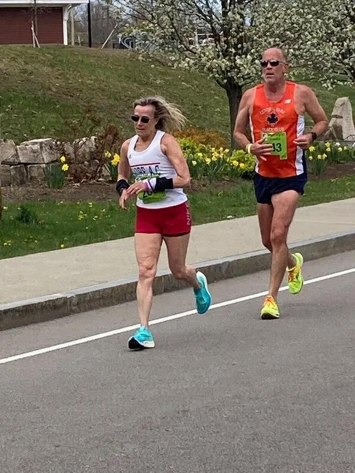

April 24, Dedham, MA: Shore AC masters harriers fire up prior to the USATF Masters National 10-kilometer race. Front row, left to right: Ali Marzulla, Suzanne La Burt, Mike Salamone, Rick Lee (in between rows), Kerry Gaughan and Susan Stirrat. Back row, left to right: Przemek Nowicki, Leslie Nowicki, Scott Linnell, Kevin Dollard, Reno Stirrat, Hal Leddy, Jeff Conston, Laura DeLea, Don Schwartz and Harry Pino.
Shore AC Results for the 2022 USATF National Masters 10K Race in Dedham, MA
Race date: April 24, 2022 Full Results from Granite State Race Services.
SHORE AC TEAM RESULTS:
50+ Women:
1 SHORE AC "A" 50+ WOMEN TOTAL 2:08:13 AVERAGE: 42:44
86.Suzanne La Burt Greenwood Lake, NY 58 F 40:06*
114.Alexandra Marzulla Middletown, NJ 51 F 42:58*
143.Laura DeLea Allamuchy , NJ 56 F 45:09*
170.Kerry Gaughan River Vale, NJ 59 F 48:21
217. Leslie Nowicki Holmdel, NJ 58 F 55:59
50+ Men A:
9 SHORE AC "A" 50+ MEN TOTAL 2:08:41 AVERAGE: 42:53
47.Jeffrey Conston Hopewell Jct., NY 54 M 37:41*
134.Scott Linnell Colts Neck, NJ 65 M 44:32*
157.Harold Leddy Bridgewater, NJ 67 M 46:28*
223.Przemyslaw Nowicki Holmdel, NJ 77 M 56:47
60+ Men A:
1 SHORE AC "A" 50+ MEN TOTAL 1:57:08 AVERAGE: 39:02
33.Rick Lee Bayville, NJ 61 M 36:41*
82.Michael Salamone Ringwood, NJ 62 M 39:20*
97.Kevin Dollard Hopewell Jct., NY 66 M 41:07*
98,Reno Stirrat Rockaway, NJ 68 M 41:13
101.Donald Schwartz Belmar, NJ 61 M 41:35
SHORE AC TEAM RESULTS:
50+ Women:
1 SHORE AC "A" 50+ WOMEN TOTAL 2:08:13 AVERAGE: 42:44
86.Suzanne La Burt Greenwood Lake, NY 58 F 40:06*
114.Alexandra Marzulla Middletown, NJ 51 F 42:58*
143.Laura DeLea Allamuchy , NJ 56 F 45:09*
170.Kerry Gaughan River Vale, NJ 59 F 48:21
217. Leslie Nowicki Holmdel, NJ 58 F 55:59
50+ Men A:
9 SHORE AC "A" 50+ MEN TOTAL 2:08:41 AVERAGE: 42:53
47.Jeffrey Conston Hopewell Jct., NY 54 M 37:41*
134.Scott Linnell Colts Neck, NJ 65 M 44:32*
157.Harold Leddy Bridgewater, NJ 67 M 46:28*
223.Przemyslaw Nowicki Holmdel, NJ 77 M 56:47
60+ Men A:
1 SHORE AC "A" 50+ MEN TOTAL 1:57:08 AVERAGE: 39:02
33.Rick Lee Bayville, NJ 61 M 36:41*
82.Michael Salamone Ringwood, NJ 62 M 39:20*
97.Kevin Dollard Hopewell Jct., NY 66 M 41:07*
98,Reno Stirrat Rockaway, NJ 68 M 41:13
101.Donald Schwartz Belmar, NJ 61 M 41:35
Left to right: April 24, 2022, D3edham, MA: Ecstatic members of the Shore AC Men's 60+ team flash their first-place medals and bright smiles at the post-race awards ceremony for the 2022 USATF Masters National 10K race. Left to right: Mike Salamone, Kevin Dollard, Reno Stirrat, Rick Lee and Don Schwartz.
Twin Wins Headline Shore AC Show at National 10K
Past attendees of the James Joyce Ramble 10K race in Dedham, Massachusetts, appreciate the side show at this race: actors in costume reading passages from Joyce's novels at key points along the course. This year, Shore AC added their own show. It was not the thespian variety, though it featured plenty of drama. No, this show was the competition for national age group honors. Yes, Shore AC emerged victorious -- not in just one but two categories: age 60+ men and age 50+ women. Grab a seat and delight in the main act!
The Shore AC 60+ men's quintet absolutely brought the house down with their triumphant performance. Superstar Rick Lee headlined the happening. A mere 6 days removed from his stupendous 2:47:58 age group victory in the Boston Marathon, Rick unleashed a torrid 36:42 that led all other runners of age 60 and over. That is, save one: the incomparable Tim DeGrado from Boulder Road Runners. He hurled a spitfire 35:59 to outdistance Rick by more than 40 seconds. Would that spell doom for our Shore AC heroes and their aspirations for first place in the team competition? The plot thickened when Joseph Mora (36:59) crossed the finish line only 18 seconds behind our leading man, putting our archrival the Genesee Valley Harriers on the scoreboard. Suspense skyrocketed when foes Robert McCormack (37:40) of HFC Striders and Ken Youngers (37:48) of the Atlanta Track Club galloped over the timing mat less than a minute later. David Westenberg (38:14) of Greater Lowell Road Runners carried his club into the ring. The battle had begun!
Casey Hannan vaulted Atlanta to an arguable lead when he checked in with a terrific 38:39. Could Shore AC counter? It was hero time! That's when Mike Salamone swooped in to counterattack. His scorching 39:20 gave us a 26-second lead over Atlanta. But GVH then smacked us with a 2-3 punch when John Van Kerkhove (40:06) and Tim Riccardi (40:30) closed out their team scoring with a sensational net time of 1:57:35. Could our third man deliver 41:33 or better to beat them? As it turned out: YES! Kevin Dollard poured out everything had down the final stretch of East Street to nail a superb time of 41:07 to secure a Shore AC victory! What's more, had Kevin faltered for any reason, teammate Reno Stirrat finished seconds later in 41:13 to guarantee the team triumph. Then, in an outstanding display of team depth, Don Schwartz zoomed home in a terrific 41:35 to provide secondary insurance. Our net time was 1:57:08, a mere 27 seconds ahead of GVH and just 97 seconds better that Atlanta. What a show!
The Shore AC 60+ men's quintet absolutely brought the house down with their triumphant performance. Superstar Rick Lee headlined the happening. A mere 6 days removed from his stupendous 2:47:58 age group victory in the Boston Marathon, Rick unleashed a torrid 36:42 that led all other runners of age 60 and over. That is, save one: the incomparable Tim DeGrado from Boulder Road Runners. He hurled a spitfire 35:59 to outdistance Rick by more than 40 seconds. Would that spell doom for our Shore AC heroes and their aspirations for first place in the team competition? The plot thickened when Joseph Mora (36:59) crossed the finish line only 18 seconds behind our leading man, putting our archrival the Genesee Valley Harriers on the scoreboard. Suspense skyrocketed when foes Robert McCormack (37:40) of HFC Striders and Ken Youngers (37:48) of the Atlanta Track Club galloped over the timing mat less than a minute later. David Westenberg (38:14) of Greater Lowell Road Runners carried his club into the ring. The battle had begun!
Casey Hannan vaulted Atlanta to an arguable lead when he checked in with a terrific 38:39. Could Shore AC counter? It was hero time! That's when Mike Salamone swooped in to counterattack. His scorching 39:20 gave us a 26-second lead over Atlanta. But GVH then smacked us with a 2-3 punch when John Van Kerkhove (40:06) and Tim Riccardi (40:30) closed out their team scoring with a sensational net time of 1:57:35. Could our third man deliver 41:33 or better to beat them? As it turned out: YES! Kevin Dollard poured out everything had down the final stretch of East Street to nail a superb time of 41:07 to secure a Shore AC victory! What's more, had Kevin faltered for any reason, teammate Reno Stirrat finished seconds later in 41:13 to guarantee the team triumph. Then, in an outstanding display of team depth, Don Schwartz zoomed home in a terrific 41:35 to provide secondary insurance. Our net time was 1:57:08, a mere 27 seconds ahead of GVH and just 97 seconds better that Atlanta. What a show!
April 24, 2022, Dedham, MA: Resplendent in their first-place team medals, members of the Shore AC women's 50+ team beat with delight. Left to right: Suzanne La Burt, Leslie Nowicki, Kerry Gaughan, Ali Marzulla and Laura DeLea.
While the M60+ competition featured high drama, the women's 50+ scene left no doubt who would rule the day. Our ladies in white couldn't be touched. Superstar Suzanne La Burt spun a screaming 40:06 to start the stunner. Not only did Suzanne win her 55-59 age group, but her heady 92.31% age grading ranked second among all masters ladies in the race. Minutes later, freshman phenom Ali Marzulla hustled home in a magnificent time of 42:58. At this point, only one other club had a runner finish, that being HFC's Mimi Fallon in 42:26. It wasn't long before #KFG's trendsetter Laura DeLea dashed across the finish line in 45:09 to close out team scoring and seal the victory for Shore AC. By then only one other runner in the field had finished, namely Greater Lowell's Trish Bourne in 43:32. And get this: the next lady to finish in the women's 50+ team field was Shore AC's Kerry Gaughan! Her superb 48:31 made it certain that we would prevail. Finally, Leslie Nowicki (55:59) took another leap forward in her racing progress, as she lopped off more than 90 seconds in her 10K time compared to the April 3 Cherry Blossom 10K race. What a victory! Our ladies prevailed over second-place HFC Striders by more than 21 minutes. The victory vaulted them into first place in the 2022 USATF Masters National Grand Prix. Go, team!
April 24, 2022, Dedham, MA: The Shore AC men's elder-slanted 50+ squad projects confidence in the early morning chill that they will avoid a last-place finish. Left to right: Przemek Nowicki (age 77), Jeff Conston (a young 54), Hal Leddy (67) and Scott Linnell (65).
Shore AC also managed to enter a men's 50+ team into the USATF Masters National 10K Championships. This was possible because we had a surfeit of age 60+ athletes. (True 50+ harrier Chris Rinaldi was scheduled to join us but fell ill and could not attend.) Replete with such elderly runners, our team knew we wouldn't come close to the podium. Instead, our goal was to avoid finishing dead last. Fortunately, we had Jeff Conston! Jeff launched the team on a high-flying trajectory by notching a fantastic time of 37:41. However, the other members of the team couldn't sustain that level of performance. Instead, Scott Linnell lumbered over the finish line in 44:32. Hal Leddy capped off team scoring with his 46:28, but more importantly was able to run the entire length of the course despite having suffered a broken rib earlier in the year. Elder statement Przemek Nowicki attached an insurance policy to the team with his 56:47. Although the currently posted team results are incorrect, it appears that, when corrected, they will show that this stalwart Shore AC men's 509+ team finished in 8th place out of 10 teams. Not bad for a mostly old crew!
In addition to our three Shore AC teams, the club had four other athletes running individually. Susan Stirrat was our lone age 60+ representative. She ran an excellent race, finishing in 52:15 to age grade at 78.63% and place fourth -- just off the podium -- in her 65-69 age group. Well done, Susan! Harry Pino continued his valiant comeback from injuries, amping up his speed a few notches to finish in 44:35, about 50 seconds faster than his Cherry Blossom time from earlier in the month. Go, Harry! Early on the morning of the race, Roland Cormier decided he would drive up from New Jersey to join in the competition. Roland made it a worthwhile excursion, clocking a 58:57 to finish on the podium in third place in his 80-84 age group. Local Massachusetts resident and top race walker Barry Blake also dropped by to say hello to his teammates and take a healthy spin around the course in 1:14:59. Great to see these individual racers!
In addition to our three Shore AC teams, the club had four other athletes running individually. Susan Stirrat was our lone age 60+ representative. She ran an excellent race, finishing in 52:15 to age grade at 78.63% and place fourth -- just off the podium -- in her 65-69 age group. Well done, Susan! Harry Pino continued his valiant comeback from injuries, amping up his speed a few notches to finish in 44:35, about 50 seconds faster than his Cherry Blossom time from earlier in the month. Go, Harry! Early on the morning of the race, Roland Cormier decided he would drive up from New Jersey to join in the competition. Roland made it a worthwhile excursion, clocking a 58:57 to finish on the podium in third place in his 80-84 age group. Local Massachusetts resident and top race walker Barry Blake also dropped by to say hello to his teammates and take a healthy spin around the course in 1:14:59. Great to see these individual racers!
April 24, 2022, Dedham, MA: Harry Pino (right) and Scott Linnell (center) gun for the finish line along with sensational 73-year-old friend Jerry Learned of Atlanta. Harry was the consummate teammate on this trip, loaning his Shore AC singlet to someone who accidentally left his at home because we couldn't put Harry on either the 50+ or 60+ squads due to a controversial rule. The rule is that a given team can have at most one out-of-region member. Being a resident of New York, Harry lives outside of the USATF New Jersey Association's region. Our men's 50+ and 60+ teams already had a NY resident per team, so there was no room for Harry. Yet he ran anyway -- and ran hard!!! Photo by Michael Scott of USATF.
Individual Accomplishments
Shore AC athletes starred on a big stage in Dedham with numerous national honors. Let's begin with those who mounted the podium in their 5-year age groups.
- Ali Marzulla 2nd F50-54 42:58 79.29% age grading
- Suzanne La Burt 1st F55-59 40:06 92.31% (2nd among masters women)
- Rick Lee 2nd M60-64 36:41 89.28% (6th among masters men)
- Kevin Dollard 2nd M65-69 41:07 83.54%
- Reno Stirrat 3rd M65-69 41:13 85.00%
- Roland Cormier 3rd M80-84 58:57 74.58%
Also playing major roles in the Shore AC pomp were these outstanding harriers, who finished in the top ten in their 5-year age groups.
- Laura DeLea 7th F55-59 45:09 80.03%
- Kerry Gaughan 9th F55-59 48:21 77.52%
- Mike Salamone 8th M60-64 39:20 84.03%
- Susan Stirrat 4th F65-69 52:15 78.63%
- Scott Linnell 8th M65-69 44:32 76.38%
- Harold Leddy 10th M65-69 46:28 74.64%
- Przemek Nowicki 9th M75-79 56:47 69.42%
|
Rick Lee nears the finish line, crossing in 36:41. Photo by Michael Scott of USATF.
|
Mike Salamone bears down to notch 39:20. Photo by Michael Scott of USATF.
|
Kevin Dollard reaches deep to close in 41:07. Photo by Michael Scott of USATF.
|
|
Reno Stirrat channels all remaining energy to finish in 41:13. Photo by Michael Scott of USATF.
|
Jeff Conston motors home with a superb 37:41. Photo by Michael Scott of USATF.
|
Hal Leddy gets it done. Photo by Michael Scott of USATF.
|
|

|
Barry Blake greets teammates after the race. Left to right: Suzanne La Burt, Kevin Dollard, Mike Salamone, Ali Marzulla, Scott Linnell, Barry Balke and Leslie Nowicki.
|
Susan Stirrat storms the streets of Dedham.
April 24, 2022, Dedham, MA: Shore AC's Angels aim to shoot down the competition. Left to right: Laura "Lethal Knee" DeLea, Suzanne "Quick Draw" La Burt and Kerry "Kick-ass" Gaughan.